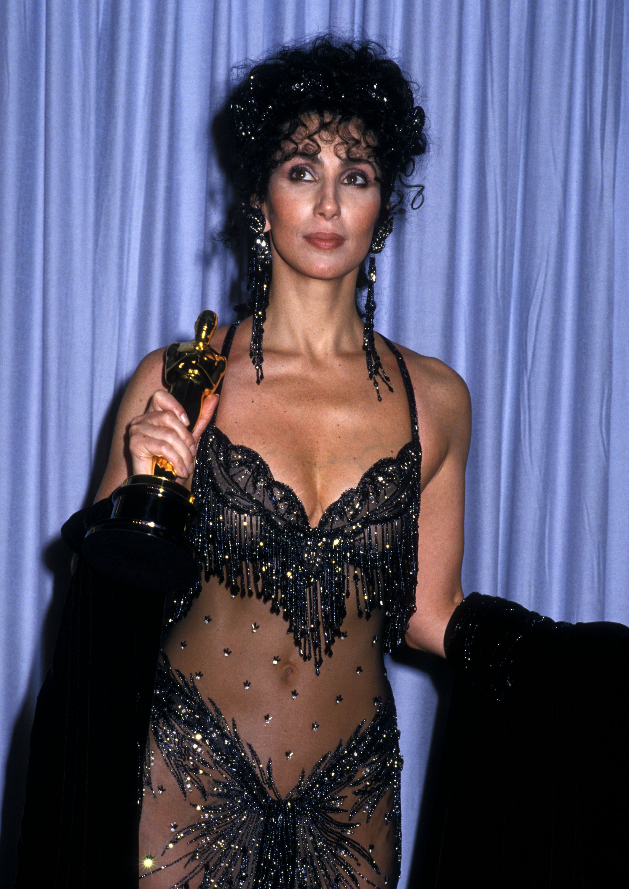
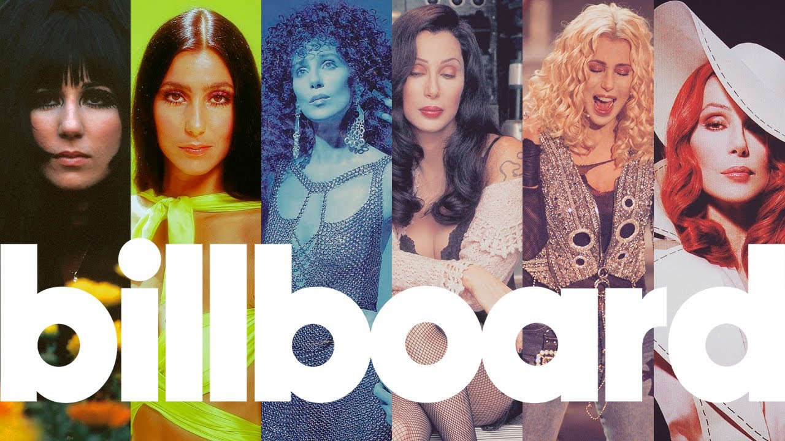

As a solo artist, Cher has sold 100 million records worldwide (in addition to 40 million as part of the duo Sonny & Cher), making her one of the best-selling music artists of all time.[41][349][415] She is one of the few artists to win three of the four major American entertainment awards (EGOT—Emmy, Grammy, Oscar, and Tony),[416] and one of five actor-singers to have had a US number-one single and won an acting Academy Award.[57] Her breakthrough single, Sonny & Cher's "I Got You Babe", is a Grammy Hall of Fame inductee[417] and was featured on Rolling Stone's "500 Greatest Songs of All Time" list compiled in 2003.[31] Her 1971 single "Gypsys, Tramps & Thieves" was called "one of the 20th century's greatest songs" by Billboard magazine.[62] Her 1998 song "Believe" is the biggest-selling single of all time by a female artist in the UK.[185] It was voted the world's eighth favorite song in a poll conducted by BBC in 2003—the only American song to be named on the list.[418] "Believe" was placed on the 2021 revised list of Rolling Stone's "500 Greatest Songs of All Time".[419] In 1988, Cher became the first performer to receive an Academy Award for acting and a RIAA-certified gold album in the same year since the inception of gold awards in 1958.[420]
Cher is the only artist to have a number-one single on a Billboard chart in six consecutive decades, from the 1960s to the 2010s.[227] She has held US Billboard Hot 100 number-one singles over the longest period of time in history: 33 years, seven months and three weeks between "I Got You Babe", which topped the chart for the first time on August 14, 1965, and "Believe", whose last week at number one was April 3, 1999.[186] With "Believe", she became the oldest female artist to have a US number-one song in the rock era, at the age of 52.[421] Billboard ranked her at number 43 on their "Greatest Hot 100 Artists of All Time" list.[422] In 2014, the magazine listed her as the 23rd highest-grossing touring act since 1990, with total earned revenue of $351.6 million and 4.5 million attendance at her shows.[423]
Cher has received numerous honorary awards, including the 1985 Woman of the Year Award by the Hasty Pudding Theatricals society at Harvard University,[424] the Vanguard Award at the 1998 GLAAD Media Awards,[347] the Legend Award at the 1999 World Music Awards,[198] a special award for influence on fashion at the 1999 CFDA Fashion Awards,[316] the Lucy Award for Innovation in Television at the 2000 Women in Film Awards,[425] the Artist Achievement Award at the 2002 Billboard Music Awards,[207] the Lifetime Achievement Award at the 2010 Glamour Awards,[426] the Legend Award at the 2013 Attitude Awards,[427] the Award of Inspiration at the 2015 amfAR Gala,[340] the Icon Award at the 2017 Billboard Music Awards,[244] the 2018 Kennedy Center Honor,[259] the Ambassador for the Arts Award at the 2019 Chita Rivera Awards for Dance and Choreography,[428] and the 2020 Spirit of Katharine Hepburn Award.[429] In 2010, Cher received the honor of placing her handprints and footprints in cement in the courtyard in front of Grauman's Chinese Theatre in Hollywood.[228] Her name is on a star on the Hollywood Walk of Fame as part of the duo Sonny & Cher.[176] She had also been selected for the honour as a solo artist in 1983, but forfeited her opportunity by declining to schedule the mandatory personal appearance.[430]
In 2003, Cher appeared at number 41 on VH1's list of "The 200 Greatest Pop Culture Icons", which recognizes "the folks that have significantly inspired and impacted American society".[431] She was ranked 31st on VH1's list of "The 100 Greatest Women in Music" for the period 1992–2012.[432] Esquire magazine placed her at number 44 on their list of "The 75 Greatest Women of All Time".[433] She was featured on the "100 Greatest Movie Stars of our Time" list compiled by People.[434] In a 2001 poll, Biography magazine ranked her as their third favorite leading actress of all time, behind Audrey Hepburn and Katharine Hepburn.[435]